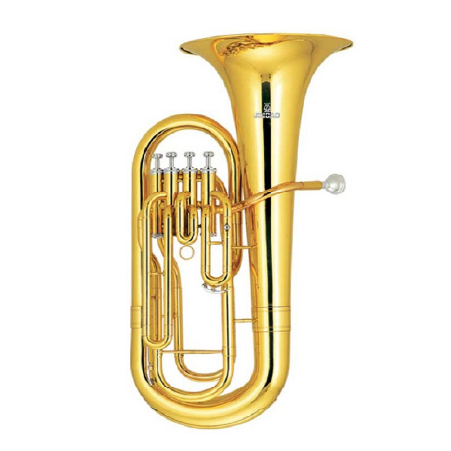

BOMBARDINO
El cuerpo del bombardino está formado por una tubería enrollada, que en conjunto con diversas bombas, llaves y pistones logran convertir la columna de aire (que el intérprete sopla en el instrumento) en un sonido suave y profundo.
Fue inventado como "un bugle de tubería ancha en el rango barítono" por Ferdinand Sommer de Weimar en 1843, pero también se le acredita a Carl Moritz en 1838 y a Adolphe Sax en 1843.
